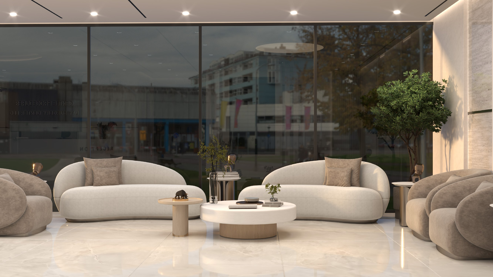
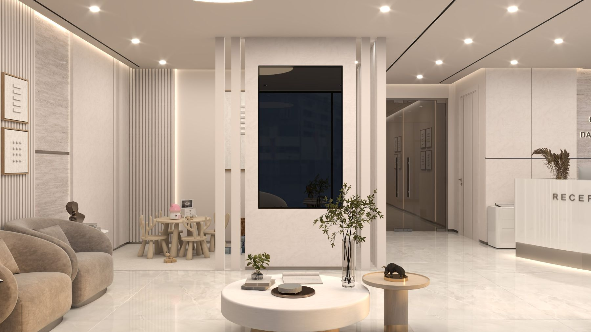
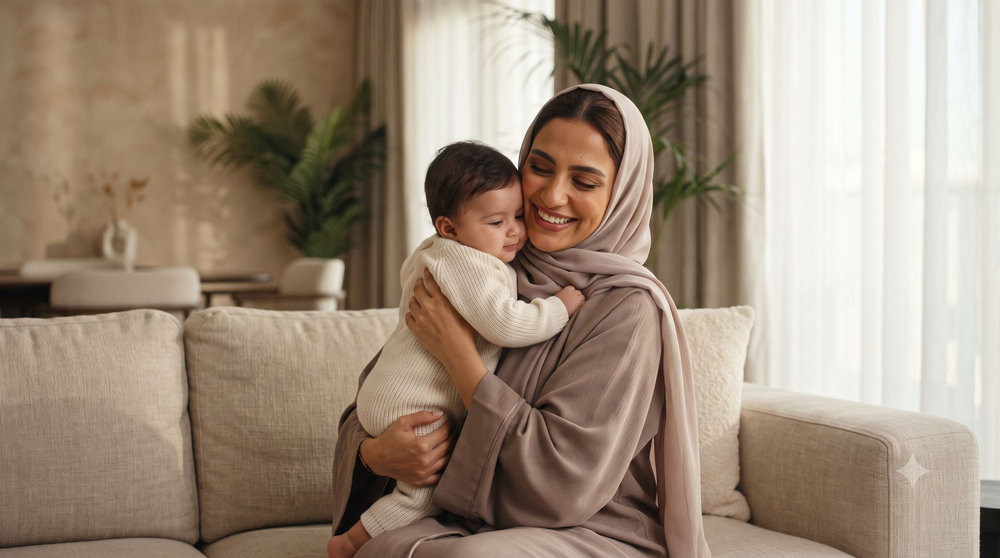

Newborn circumcision is one of the oldest and most meaningful traditions in the world. We believe it deserves a home built entirely around it — not a corridor in a busy hospital, but a place designed, staffed and measured for one gentle purpose.

Our Story
Our Story
This clinic began with a conviction, earned over many years in children's operating theatres: the way a procedure is done matters just as much as the procedure itself. Nowhere is that truer than in the first weeks of a boy's life.

Why Dubai
Because this is where the world's families meet.
Dubai holds a hundred cultures in one city — and for millions of families here, khitan is a cherished milestone: an act of love, faith and belonging.
Bringing this standard home, to Al Wasl Road in the heart of Jumeirah, is quite simply a point of pride.
1Gentle technique
4Continents
100k+Families welcomed

A global family
We are the newest home of something proven.
The Pollock Technique — developed and refined over decades by Dr Neil Pollock of Vancouver, carrying the experience of more than 100,000 families — is practised in Gentle Procedures clinics across four continents.
Canada· United States· United Kingdom· Ireland· Australia· United Arab Emirates
In both scripts
And now it speaks
Arabic too.
وبالعربية أيضاً
- Spoken here
- English and Arabic, at every step
- In writing
- Your son's preparation and aftercare, in either
- A member of
- The Pollock Group

“The night before, every parent asks the same quiet question: am I placing my son in the right hands? This is our answer.”One voice
The promise
A story is only as good as its next chapter.
So we measure ourselves: every week, the whole team asks what could be even gentler. That is the story we intend to keep writing — one family at a time.